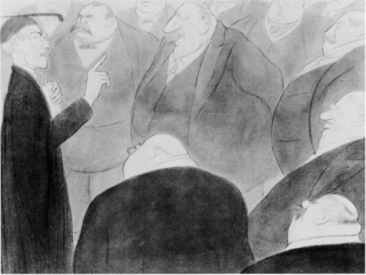

卡内基的《民主的胜利》既显示了这两种自由主义之间，也显示了它们各自与个人主义之间的紧张关系。他对适者生存的理解完全拘泥于字面，以至于要面对资本积累问题。那个白手起家的人是民主的英雄，但他应该如何利用自己的财富？他反对“富人的儿子”，为之争辩。这样的“儿子”钱不是自己挣的。继承的财富腐蚀了赚取大量财产和守住财产所需的美德。他说：“死时富有的人应该受到诅咒。”进化规律要求百万富翁散出钱财。当然，进化也要求他授意手下的管理人员派遣一驳船武装的平克顿的人，以最血腥的方式破坏伯利恒钢铁厂中毅然决然、不顾一切的罢工。但是，卡内基世界和平基金会是真实存在的，资金充足。直到1914年，卡内基都和所有自由主义者一样认为，新的全球经济以及关税壁垒的降低将确保资本主义国家之间的和平，确保战争逐渐消亡。
但问题仍然是，如何在不干涉进化过程的情况下在国内花钱。赫伯特·斯宾塞曾在一场由纽约的金融家们为他举行的盛大宴会上发表演说，讲到甚至连在乞丐的杯子里放下一毛钱都是轻率的极度不公。他拖长声音说，乞丐把这一毛钱拿去买啤酒或香烟，而不是用来拾掇自己以寻找工作，这一点都不奇怪。对穷人的救济只会使那些不适于进步的人长期存在。那么，如何不给人钱财又帮助他们自助呢？对于卡内基来说，答案突然变得很明显，就像长期以来对密尔来说那样明显：进行教育，对卡内基来说则更为具体，即提供免费的公共图书馆。他不仅在美国，而且在生身之地苏格兰四处建馆（不经意间使许多小自治市倾家荡产，因为卡内基捐赠建筑的唯一条件是要用书来填满，而图书馆可供选择的最小样板通常也嫌太大）。身处芝加哥的爱尔兰裔幽默作家杜利先生曾从卡内基的管家那里听说，一个流浪汉在门口要一杯牛奶和一个面包卷。“不，不要让那个穷人再穷下去了。给他一座图书馆。”卡内基还买下了英格兰和苏格兰的省级报纸，代表格拉德斯通和自由党的利益运营。这是不是出于寻求特殊待遇的动机，而粗暴侵入另一个国家的政治？远远不是。他不是默多克，不需要从格拉德斯通那里寻求优待。他只是想加快民主不可避免的进化过程，英国在此过程中有些落后于美国了。
当然，还有另一种城市民粹主义者，也是城市资本主义民主同样奇怪的产物。他们的确发放了一点牛奶、一些面包卷，还提供了许多岗位：爱尔兰移民的新的城市政治核心组织，后来还包括意大利移民的。阿尔杰的米奇·麦奎尔将为他们工作，并且确实经常威胁相当数量的选民不要参加投票。但是在其他城市，坦慕尼协会之类组织的老板们是属于人民并服务于人民的，尽管林肯说的“受治于人民”（by the people）还看不出来。坦慕尼协会的一位领导人（sachem）兼市长理查德·克罗克的代理官员，一个名叫乔治·华盛顿·普伦基特的人，有过一个著名的哲学思考：“丝袜原则固然很好，但是它们无法让你在第十四选区走得很远”，在该区“谈论莎士比亚也是徒劳”。当然，对选举腐败的这种友好的宽容，只要是由人民做出的，就并没有完全消失，并且远远越出了大城市，有时甚至决定着总统选举本身的结果。

图10 伍德罗·威尔逊会见国会议员，由马克斯·比尔博姆根据想象绘制
所以，自由主义民主在美国有不同的模式，但在总体上占主导地位的意识形态是自由主义。美国并没有欧洲意义上的真正的保守主义传统，也没有社会主义。关于保守主义和社会主义都有许多著作问世，但两类著作对政治和文化都没有任何持久的影响。这就是我在美国民主上着墨颇多的原因，因为与旧世界那更为意识形态化的政治分歧和阶级——文化分歧相比，在美国，宪政和个人主义的力量以及民粹主义的弱点对全世界来说依然无比清晰。路易斯·哈茨在《美国的自由主义传统》（The Liberal Tradition in America）中写道：“原子式社会自由这一现实，是美国政治思想的主要假设。”他认为那项传统是自由主义的。对于欧洲人来说，这不过是悖论，他们的传统一直是保守主义的，他们对民主，甚至自由主义民主的概念本身一直有些不安或困惑，无论我们如何自称。H.G.韦尔斯在1906年一本富有创见的旅行书《美国的未来》（The Future in America）中说：